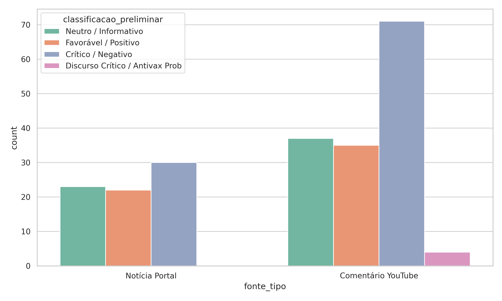
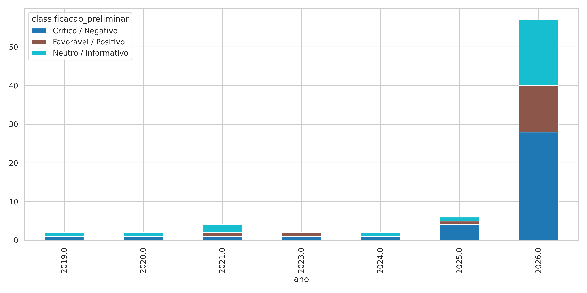
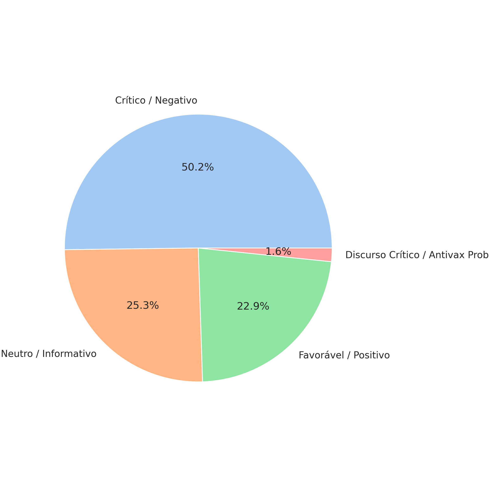

Os textos destacam o reforço de campanhas municipais de imunização (Covid-19, gripe, sarampo e HPV) motivado pelo alerta de novos casos e a ampliação do público-alvo. Paralelamente, enfatizam avanços científicos com a eficácia de novas vacinas (pneumonia, meningite e chikungunya) e o sucesso de estratégias locais para aumentar a cobertura vacinal.
Os principais pontos negativos indicam críticas à gestão pública por atrasos na adoção de imunizantes vitais (como o VSR) e por tentativas de incorporar vacinas sem registro na Anvisa. Além disso, há forte presença de desinformação sobre critérios de elegibilidade para a vacina contra pneumonia. Por fim, destacam-se o avanço nos casos de mpox associado a falhas em tratamentos antivirais, exigindo compras de emergência.



Aumento de casos de covid-19 reforça alerta para vacinação em Belo Horizonte - Prefeitura de Belo Horizonte
Sesau reforça importância da vacinação e medidas de prevenção da Covid – CGNotícias - Prefeitura de Campo Grande
Nova vacina contra pneumonia e meningite apresenta resultados positivos em testes com bebês - O Tempo
Vacina contra chikungunya é eficaz até cinco anos após aplicação, diz laboratório - UOL Notícias
Campanha Vacinação Sem Fronteira utiliza estratégias criativas para levar imunização em Alto Alegre dos Parecis - Portal Guajará
Prefeitura realiza ‘Dia D’ de vacinação contra o sarampo - Prefeitura de Manaus
Vacinação contra HPV para jovens de 15 a 19 anos vai até dezembro no DF; veja onde se imunizar - G1
Vacina Pneumo 20 em Belém: saiba onde tomar, quem tem direito e documentos para receber dose contra pneumonia - G1
Imperatriz amplia vacinação contra influenza e libera imunização para público geral - Prefeitura Municipal de Imperatriz
Após morte por Covid, Aquidauana (MS) alerta população e reforça vacinação - G1
Ministério da Saúde inicia processo de incorporação de vacina sem registro na Anvisa - JOTA Info
Vacina contra pneumonia não foi liberada para pessoas acima de 58 anos; veja quem pode tomar - Tribuna do Norte
Vacinação antirrábica: Marechal Deodoro prossegue com Dia D neste sábado (14) - Marechal Deodoro
Vacina contra pneumonia não foi liberada para pessoas acima de 58 anos - viva.com.br
Casos de mpox voltam a subir, antiviral falha em testes e Brasil compra 25 mil doses da vacina - Terra
O silêncio dos inocentes: as vítimas da demora do Ministério da Saúde em adotar vacina materna contra o VSR - Gazeta do Povo
OPAS amplia recomendação de vacina da dengue para faixa de 6 a 59 anos - VEJA
Casos e mortes por Covid-19 sofrem queda de 68,8% em 2026 - CNN Brasil
Informação que vacina contra pneumonia foi liberada para pessoas acima de 58 anos é falsa - UOL Notícias
Paraíba atualiza orientações para vacinação contra mpox; dois casos foram confirmados no estado - Diário do Sertão